Other Choices of u, d and p
Whenever the binomial distribution converges to the right normal distribution as n→∞ , the pricing result is correct.
Here “the right normal distribution” means its first and second moments are correct.
There are various kinds of choices.
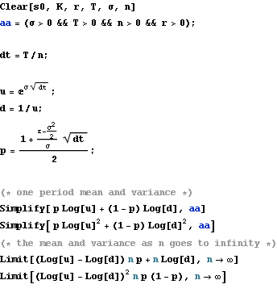
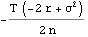


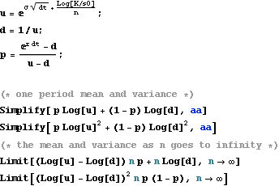
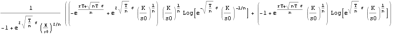
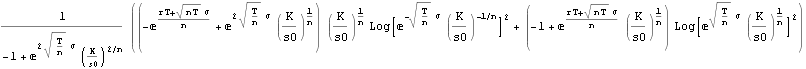
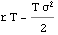

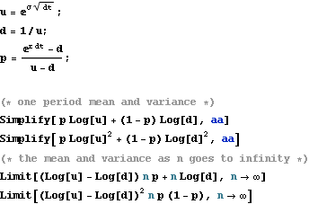
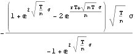
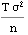


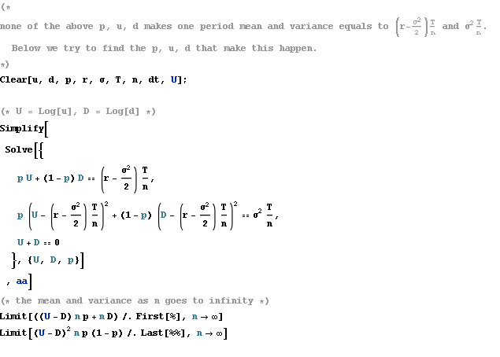
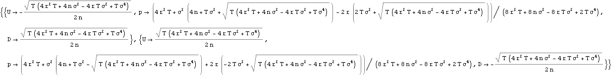

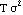